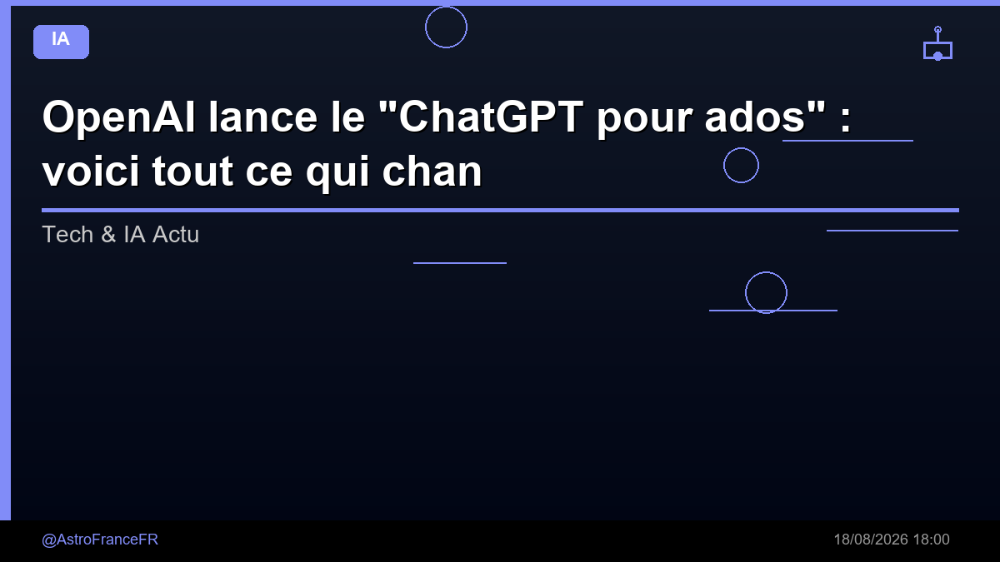

OpenAI lance le "ChatGPT pour ados" : voici tout ce qui change si vous avez moins de 18 ans - Presse-citron

🛒 En lien avec cet article
Publicité — Liens de partenariat Amazon : une commission peut être reversée, sans surcoût pour vous.
🔥 Top produits tech du moment
Publicité — Liens de partenariat Amazon : une commission peut être reversée, sans surcoût pour vous.
L'intelligence artificielle continue de transformer en profondeur notre quotidien et l'économie. Cette annonce s'inscrit dans une dynamique où les grands acteurs accélèrent leurs investissements et leurs lancements.
Ce qu'il faut retenir
OpenAI lance le "ChatGPT pour ados" : voici tout ce qui change si vous avez moins de 18 ans Presse-citron
Pourquoi c'est important
Cette information marque une nouvelle étape dans le développement de l'intelligence artificielle. Elle concerne directement les utilisateurs de technologies numériques et mérite d'être suivie de près dans les prochaines semaines. OpenAI lance le "ChatGPT pour ados" : voici tout ce qui change si vous avez moins de 18 ans - Presse-citron est ainsi un signal à prendre en compte pour comprendre les évolutions du secteur.
En résumé
Retenez l'essentiel : OpenAI lance le "ChatGPT pour ados" : voici tout ce qui change si vous avez moins de 18 ans - Presse-citron. Cette actualité a été rapportée par Google News IA. Nous continuerons de suivre ce sujet et de vous tenir informés des prochaines évolutions.
Source : Google News IA